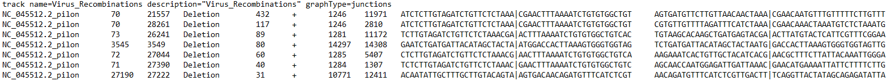
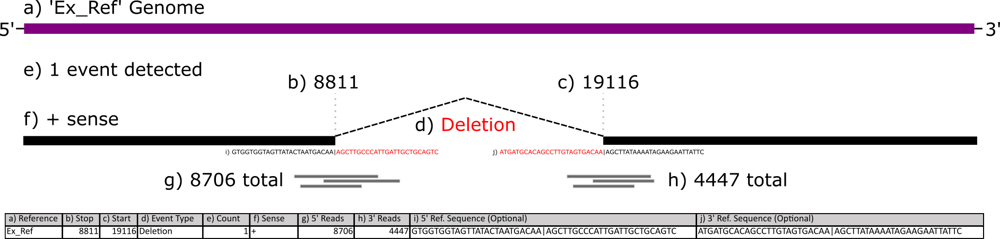
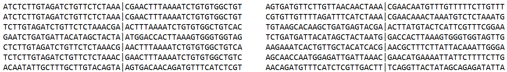
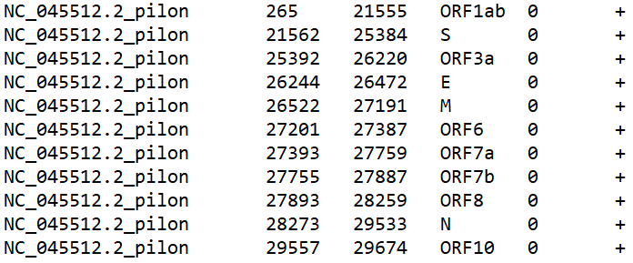

Analyzing ViReMa Output Online With Shiny
Jason Yeung
12/28/2021
Getting Started with ViReMa Online
This tutorial will guide users through analyzing viral recombination data from ViReMa using an online app built using the R Shiny framework. This Shiny app lets you analyze your ViReMa output with minimal curation and without needing to code! Follow along or skip to the examples to get an idea of how to use the app to answer your scientific questions. Check out the preprint for an additional intro to the app.
Setting Up
The application has two main modes: analysis of local data ‘Analyze Local Files’ and analysis of data from our database ‘Analyze ViReMa Database’ (We’re working on this). Analysis of local data from your computer stays private and does not upload or save your data. If you would like to contribute your data to our database, a separate submission form is included under the ‘Deposit Sequences’ tab.
Analyzing Local Files
After you access the ‘Analyze Local Files’ tab, the first step is to upload ViReMa output files. These come in .BED, .TXT, or .BED6 format. Your files need to have at least 6 columns - these correspond to the reference sequence, the donor site (start), the acceptor site (end), a description field, reads, and strandedness. If you selected other options during ViReMa analysis, you may have extra fields like reads at the acceptor site/donor site or nucleotide sequences at those sites.

This figure below illustrates what each column corresponds to:

You can download some example ViReMa output files here and here - directly download it or copy/paste/save it as a .BED or .TXT file in your favorite text editor. These are two samples of SARS-CoV-2 that have been sequenced and processed with the ViReMa pipeline.
Subsetting
Now, interactable scatterplots should load, allowing you to subset and explore sequences by their nucleotide index. The scatterplots represent the combined data of all files you upload. It also plots different reference sequences in the same plotting area (important if you have a segmented virus with multiple references). If you want to visualize one reference sequence in particular, a dropdown menu (‘Select RefSeqs (Column 1) to Visualize’) under ‘Options’ to the left of the plot allows you to select various combinations of included reference sequences.
Multiple variables are displayed in the scatterplot. A rug plot along the axes shows the density of events, analogous to a histogram. The x-axis is the acceptor site, the y-axis is the donor site, the dot size is the unadjusted read count added from all included samples, and the color is the number of samples an event appears. Having read counts and the number of isolates visualized allows us to look at events which are frequent and conserved in sequencing experiments.
After scrubbing both plots, a table will load below. This table allows for further subsetting based on various parameters included in your output file.
There is also a more advanced text box that allows filtering of the combined dataset. This filters the entire combined dataset (not just what is scrubbed in the scatterplots) and loads the filtered data into the table, overriding whatever is currently scrubbed. Filter expressions must be written in R.
Recombination events in the table can be highlighted by toggling ‘Highlight Table Sequences’ under the ‘Options’ dropdown. Events in the table will show up as red - the size of the dot will no longer correspond to values that affect dot size. You can also click on events in the table to further highlight dots yellow.
Overview Plots
The overview plots are generated based on the entirety of the combined dataset, not just the events in the table.
Included are nucleotide plots for donor and acceptor sites. These plots show the frequency of nucleotides proximal and distal to recombination sites. In order to generate these plots, you had to select the option to produce this output when running the ViReMa pipeline. The necessary columns look like this:

Genomic Viewer
This tab includes a Circos plot which represents events in the sequence table on a circular depiction of the viral sequences. Annotations of genes, structural motifs, or other relevant information can be imported or added using the ‘Fast Annotations’ table to the left. You can download annotations that correspond to the files we have provided here - directly download it or copy/paste/save it as a .BED or .TXT file in your favorite text editor.
There are multiple places to find annotations for your viral genome. NCBI has annotations associated with sequences. Below shows this process for a popular SARS-CoV-2 reference sequence.

The UCSC Genome browser website has a comprehensive collection of annotations for SARS-CoV-2. Access the “Data Integrator” at https://genome.ucsc.edu/cgi-bin/hgIntegrator. Below shows the process of exporting data:

Then, copy the data into Notepad or another text editor and save it as a .BED or .TXT file.
Naturally, you could make annotation files yourself. The annotations need certain columns to be plottable:

They correspond to the ref seq, start, end, name, value, and strand. Only the first 4 are necessary for our purposes. You can also include hex codes WITHOUT the # (example - E58601) to add custom colors to your annotations in an additional column at the end. Important note - make sure the reference sequence name matches a reference sequence name in your .BED files. The plot will not work otherwise!
The ‘Options’ dropdown allows for adjustments to the plot. One key feature is putting upper and lower bounds on the nucleotide index. This allows you to focus on areas of interest, removing empty space in the plot.
Examples
Here, we’ll cover some common ways to explore your data.
What are the most common recombination events?

Is their a nucleotide usage bias around duplication events in my data?

Where do recombination events occur relative to my gene of interest?